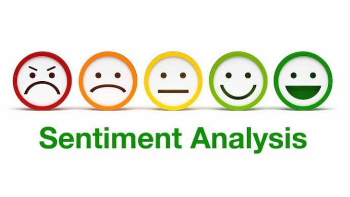
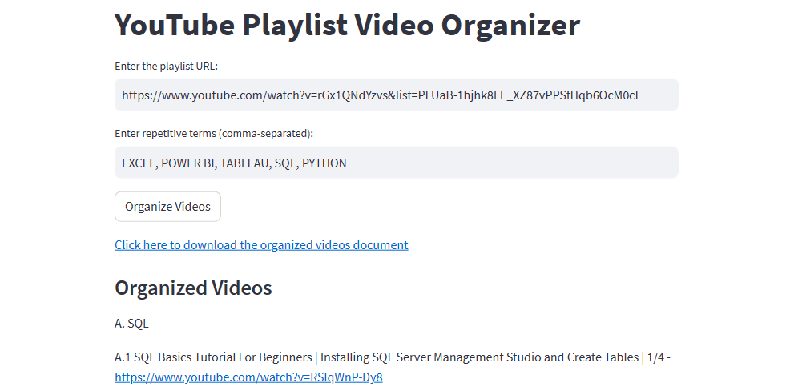

Using Python, I utilized machine learning for the early detection of sepsis, a critical medical condition triggered by the body's extreme response to infection. I collected and processed clinical data and applied different algorithms to predict sepsis. Finally, I deployed the model using FastAPI for quick integration into healthcare workflows and developed a web application using the Streamlit framework, providing healthcare professionals with a powerful tool for rapid and accurate sepsis prediction, potentially saving lives.


Using Python, I utilized machine learning to predict income levels, addressing income inequality and providing insights for policymakers. Key highlights include employing the CatBoost classifier, deploying the model via Streamlit and FastAPI for scalable predictions, and integrating an embedded PowerBI dashboard for visual insights into income patterns. The project offers a comprehensive solution for predicting income levels and empowering policymakers and stakeholders with a practical tool to understand and potentially mitigate income inequality through data-driven approaches.
In this project, I utilized advanced data analysis techniques and programming skills to conduct an extensive exploratory data analysis of Indian startup funding from 2018 to 2021. By leveraging Python and its popular libraries including pandas, NumPy, Matplotlib, seaborn, and SciPy, I explored funding patterns, sector-wise distribution, geographical impact, trends over time, and correlations between factors.

In this project, I applied a machine learning classification approach to predict customer churn in a telecommunications company. Using the Cross-Industry Standard Process for Data Mining (CRISP-DM) framework, I performed data exploration, handled missing values, engineered relevant features, developed a predictive model, evaluated its performance, interpreted the results, and optimized the model through hyperparameter tuning.
In this regression project, I focus on time series forecasting to predict store sales. By following a structured methodology that includes data exploration, preparation, time series analysis, model selection and training, evaluation, and deployment, the goal is to build a reliable forecasting model. The project aims to provide accurate predictions to optimize inventory management, plan promotions, and enhance overall sales performance for Corporation Favorita.

In this sentiment analysis project, I developed a machine learning model that can effectively determine the sentiment (positive, neutral, negative) in Twitter posts related to COVID-19 vaccination topics. By analyzing public sentiment, the solution aims to aid public health organizations and policymakers in devising effective strategies for vaccine communication and promotion.

As a passionate learner, I developed the YouTube Playlist Organizer to simplify the organization of my YouTube playlists. By utilizing an API, this tool categorizes videos, allowing me to easily track my progress and access specific content within the playlist. With the YouTube Playlist Organizer, I streamline my learning journey by automating the process of organizing videos based on their subjects. This tool enhances my learning experience and maximizes the value of large YouTube playlists.